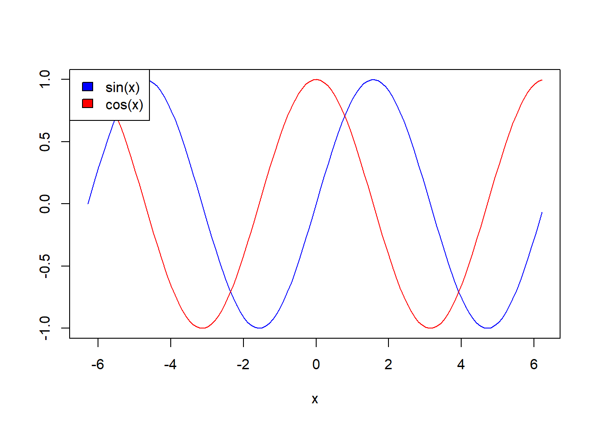
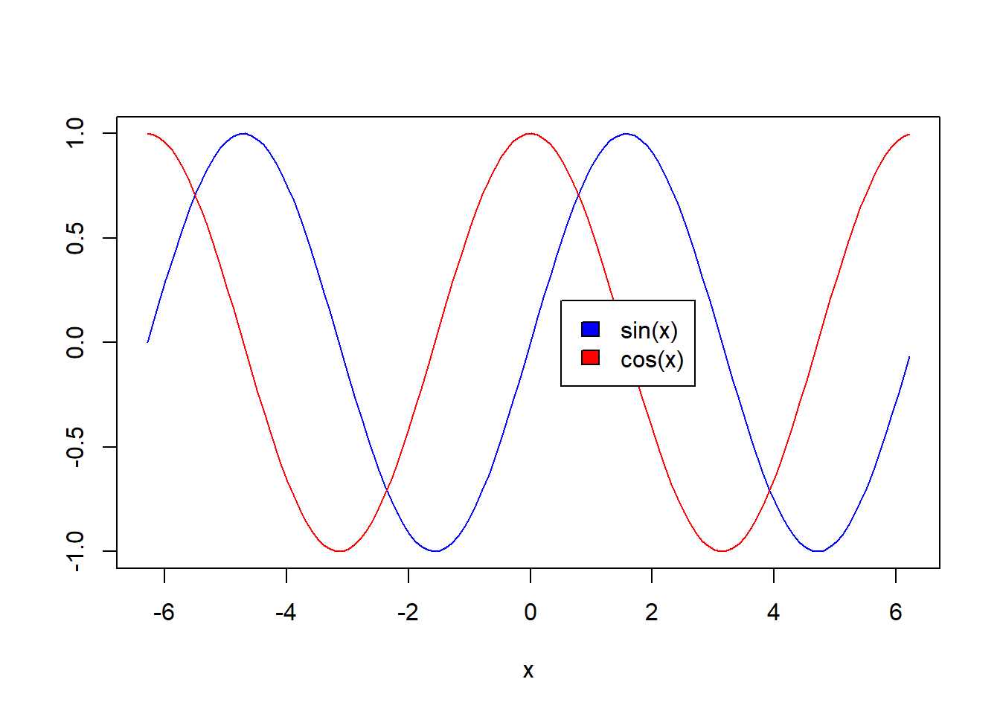
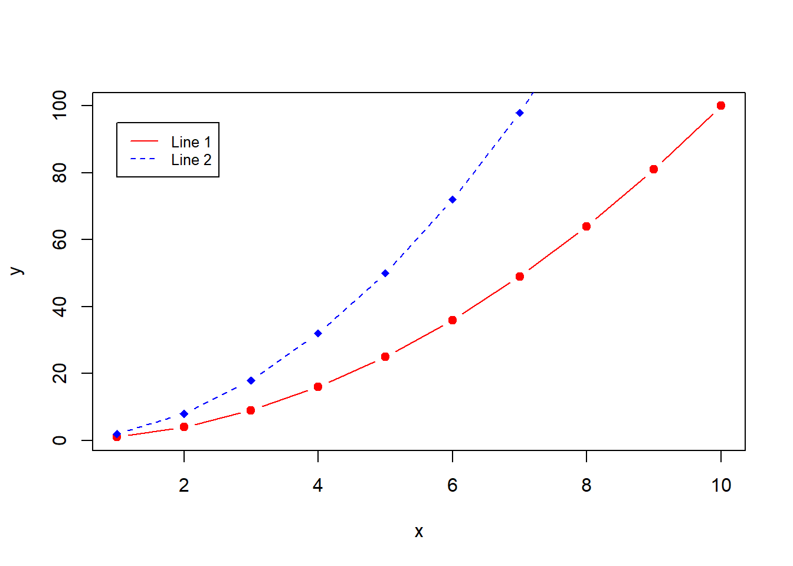

axisKomentarz: pierwszy parametr axis określa położenie osi: 1- dół, 2- lewa strona, 3 - góra, 4 - prawa strona.
a<-c(1,2,3,4,5,6,7)
b<-c(23,3,2,4,5,2,-2)
plot(a,b,axes=FALSE,type="o",col="blue",ann=FALSE)
axis(4, las=1, at=10*0:range(b)[2])
axis(3, at=1:7, lab=c("Pn","Wt","Śr","Czw","Pt","So","Nd"))
box()at - kontrola nad podziałkąJeśli w parametrze at chcemy mieć kontrolę nad tym co będzie, możemy dodać tam ręcznie konkretny wektor. Ale musimy pamiętać o marginesach.
a<-c(1,2,3,4,5,6,7)
b<-c(23,3,2,4,5,2,-2)
plot(a,b,axes=FALSE,type="o",col="blue",ann=FALSE)
axis(2, las=1, at=c(0,5,17,20,23))
axis(1, at=1:7, lab=c("Pn","Wt","Śr","Czw","Pt","So","Nd"))
box()Wykresy dwuosiowe należy stosować z dużą rozwagą. Najprościej użyć parametru new ustawionego na TRUE. Parametry xaxt i yaxt dotyczą odpowienich podziałek na osiach. Przykładowo:
x<-c(1,2,3,4,5)
y1<-c(5,4,6,7,4)
y2<-c(100,101,103,99,98)
plot(x,y1,type="l",col="red")
par(new=TRUE)
plot(x, y2,,type="l",col="blue",xaxt="n", yaxt="n",xlab="",ylab="")
axis(4)
legend("topleft",col=c("red","blue"),lty=1,legend=c("y1","y2"))A jak dodać etykietę prawej osi y?
old_par <- par(no.readonly = TRUE)
par(mar=c(5,4,4,5)+.1)
x<-c(1,2,3,4,5)
y1<-c(5,4,6,7,4)
y2<-c(100,101,103,99,98)
plot(x,y1,type="l",col="red")
par(new=TRUE)
plot(x, y2,,type="l",col="blue",xaxt="n", yaxt="n",xlab="",ylab="")
axis(4)
legend("topleft",col=c("red","blue"),lty=1,legend=c("y1","y2"))
mtext("y2",side=4,line=3)par(old_par)Składnia: gray.colors(num_colors, start=value, end=value, gamma=value).
0 = czerń i 1 = biel (domyślnie start=0.3 i end=0.9).
Składnia: heat.colors(num_colors, alpha=value).
Z przezroczystością:
Pozostałe możliwości:
rainbow z określonym początkiem i końcem:
Składnia: hsv(h=value, s=value, v=value, gamma=value, alpha=value). Opis na wiki - link.
urlopy<- c(23,3,4,15,8)
barplot(urlopy)Parametry: names.arg - nazwy argumentów, border - kolor brzegu, density - wypełnienie.
barplot(urlopy, main="Urlopy", xlab="Miesiące",
ylab="Łącznie", names.arg=c("Sty","Lut","Mar","Kwi","Maj"),
border="pink", density=c(10,40,30,20,50))Parametr horiz=TRUE zmienia orientację na poziomą.
barplot(urlopy, main="Urlopy", xlab="Miesiące",
ylab="Łącznie", names.arg=c("Sty","Lut","Mar","Kwi","Maj"),
border="pink", density=c(10,40,30,20,50), horiz=TRUE)Parametr beside=TRUE dodaje grupowanie danych (w tym wypadku po kolumnach). bty - typ obramowania (tutaj legendy, n-brak, o- dookoła).
urlopy<- matrix( c(2, 4, 8, 1,4, 5, 7,11,3,24,12,9), nrow=4, ncol=3)
urlopy## [,1] [,2] [,3]
## [1,] 2 4 3
## [2,] 4 5 24
## [3,] 8 7 12
## [4,] 1 11 9barplot(urlopy, main="Urlopy", ylab= "Razem",
beside=TRUE, col=rainbow(4))
legend("topleft", c("1Q","2Q","3Q","4Q"), cex=0.6,
bty="n", fill=rainbow(4))Wykres słupkowy na podstawie macierzy. space - odstęp między słupkami.
barplot(urlopy, main="Urlopy", ylab="Razem",
col=heat.colors(4), space=0.1, cex.axis=0.8, las=1,
names.arg=c("A","B","C"), cex=0.8)
legend("top", c("1Q","2Q","3Q","4Q"), cex=0.8, fill=heat.colors(4));Składnia: rnorm(n, mean = 0, sd = 1). Jako wynik otrzymujemy wektor n obserwacji.
Parametr prob = TRUE odpowiada za wyświetlanie gęstości a nie liczebności.
x<-rnorm(1000)
hist(x, prob = TRUE)
lines(density(x), xlab="", ylab="", main="")
breaks określa punkty podziałów. Może być liczbą.
hist(AirPassengers, main="Pasażerowie linii lotniczych", xlab="Pasażerowie",
border="blue", col="red", xlim=c(100,700), las=1,
breaks=9)
Druga opcja to podanie wektora. Ale ostrożnie.
hist(AirPassengers, main="Pasażerowie linii lotniczych", xlab="Pasażerowie",
border="blue", col="red", xlim=c(100,700), las=1,
breaks=c(100,300,400,500,650))
hist(AirPassengers, main="Pasażerowie linii lotniczych", xlab="Pasażerowie",
border="blue", col="red", xlim=c(100,700), las=1,
breaks=c(100,300,500,700))